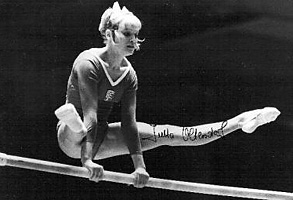

Jutta Oltersdorf (FRG)

Jutta trained at TB Emmendingen.
Competition Results
1968
Olympic Games: 8th Team,
1970
World Championships: 8th Team, 48th AA
1971
European Championships: 7th AA, 6th UB
FRG Championships: 1st AA, 1st UB, 1st B, 1st FX
1972
FRG Championships: 1st AA
1975
ROM-FRG Dual Meet: 2nd Team, 6th AA
1976
FRG Championships: 2nd AA
Olympic Games: 7th Team
ROM-FRG Dual Meet: 2nd Team, 7th AA
This page was created on November
06, 2005.
© Gymn Forum